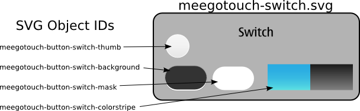

| Home · All Classes · Main Classes · Deprecated |
A logical ID is a way to unambiguously refer to graphics from the theme. Each and every asset from the theme, be it an icon, a background image, or a widget graphics object, has such an ID.
The ID abstracts the actual graphics format from the application developer, and allows MeeGo Touch to automatically switch the graphics when the theme changes to match the new look.
Logical IDs are typically used:
Examples of methods that accept a logical ID:
To ensure that a widget is updated when the theme changes, provide a logical ID to the widget instead of a QPixmap or QImage.
In case you are implementing a widget yourself or you require a direct handle to the graphics for some other reason, you can request a QPixmap containing particular themed graphics using MTheme::pixmap(const QString &id, const QSize &size).
In MeeGo Touch CSS files, a logical ID can be provided for style attributes that are of MScalaleImage or QPixmap types:
MButtonSwitchStyle { background-image: "meegotouch-button-switch-background"; thumb-image: "meegotouch-button-switch-thumb"; ... }
A themed graphical asset may be either a static image on the file system, or a single element or group inside an SVG document. The rules for mapping a logical ID to graphics are:
The following figure illustrates how a single SVG document contains all of the necessary graphical assets to draw the MButton::switchType widget:

| Copyright © 2010 Nokia Corporation | MeeGo Touch |